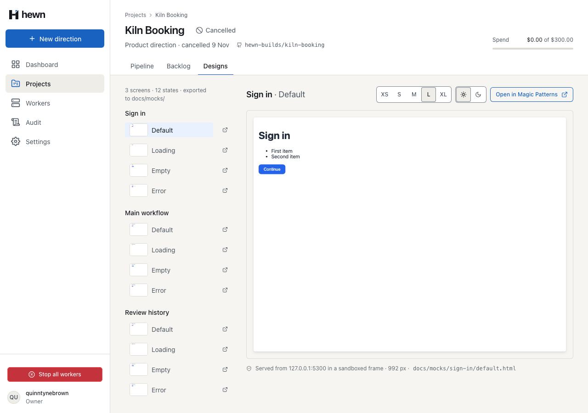
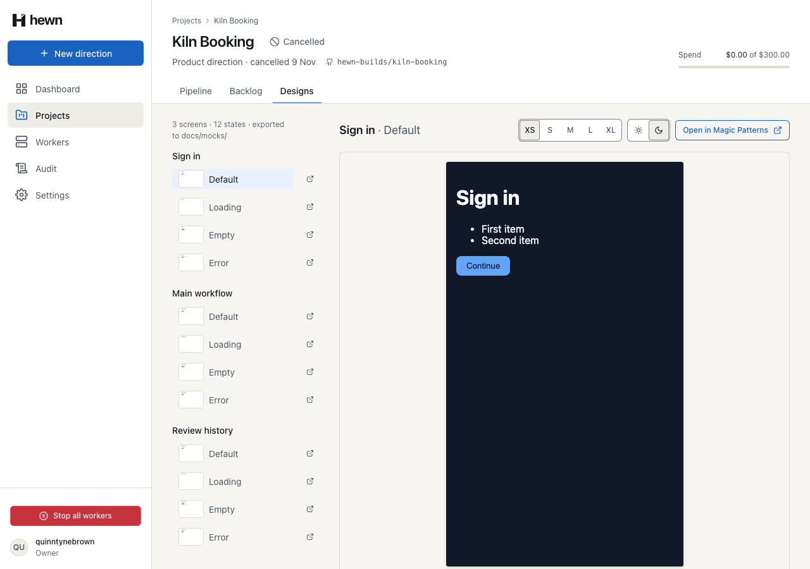
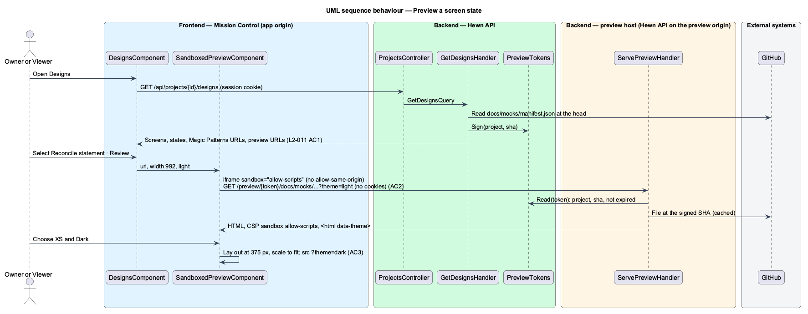
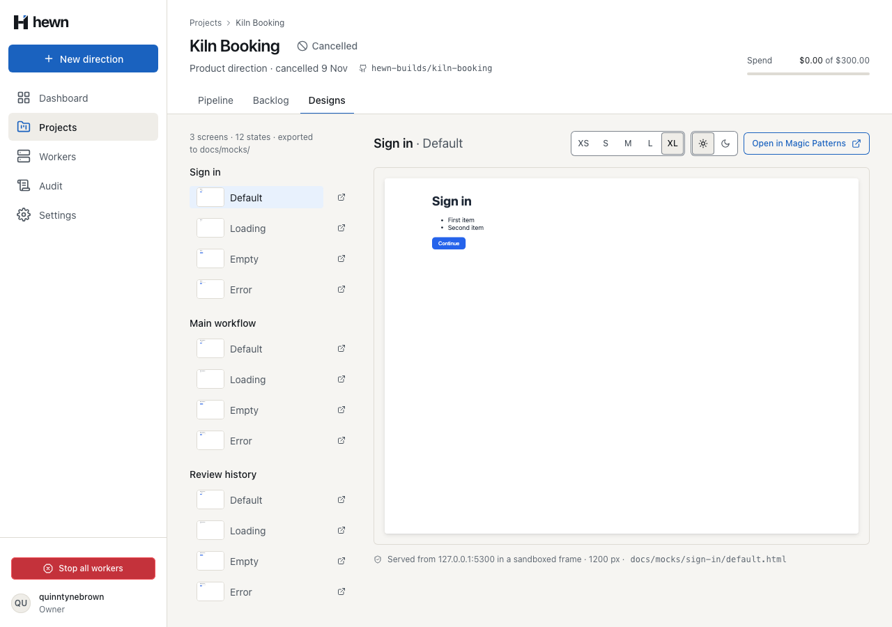
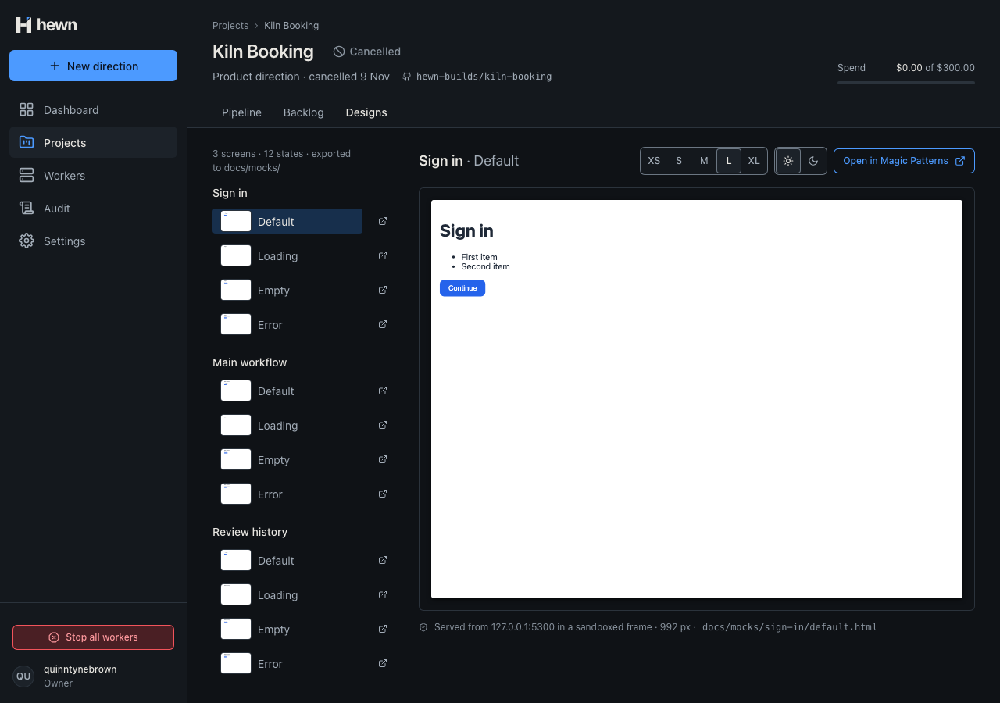
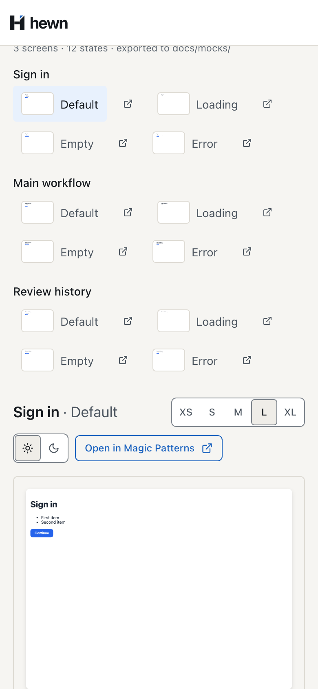
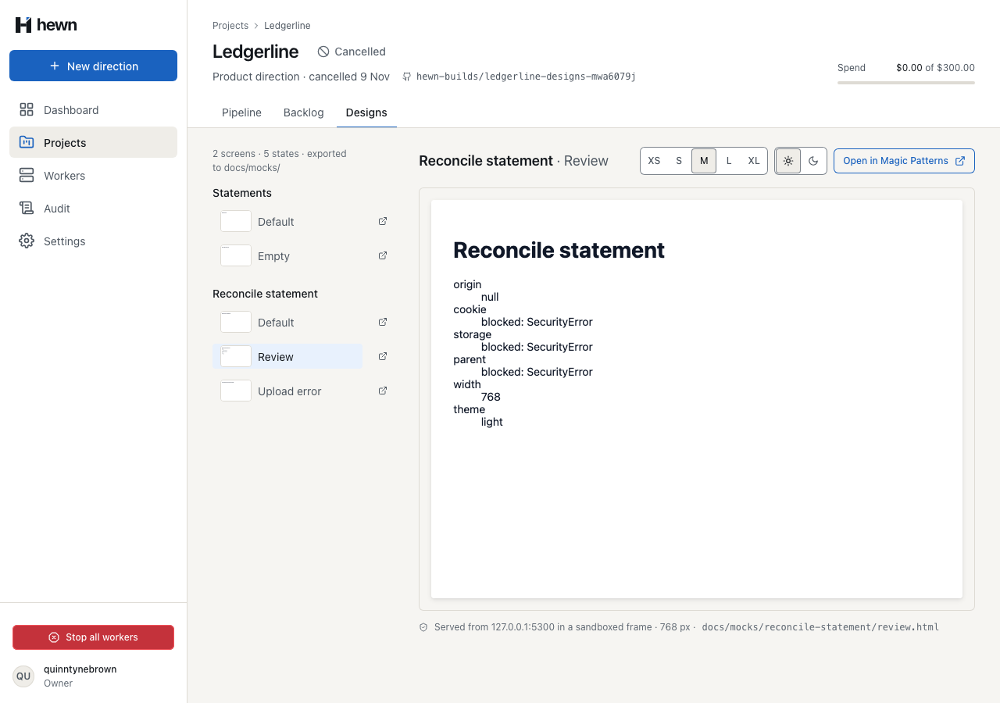
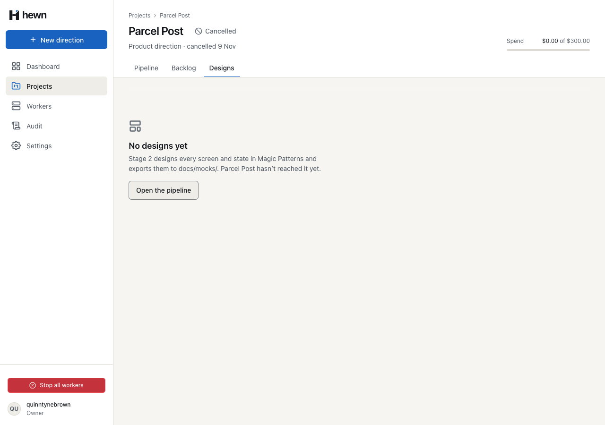
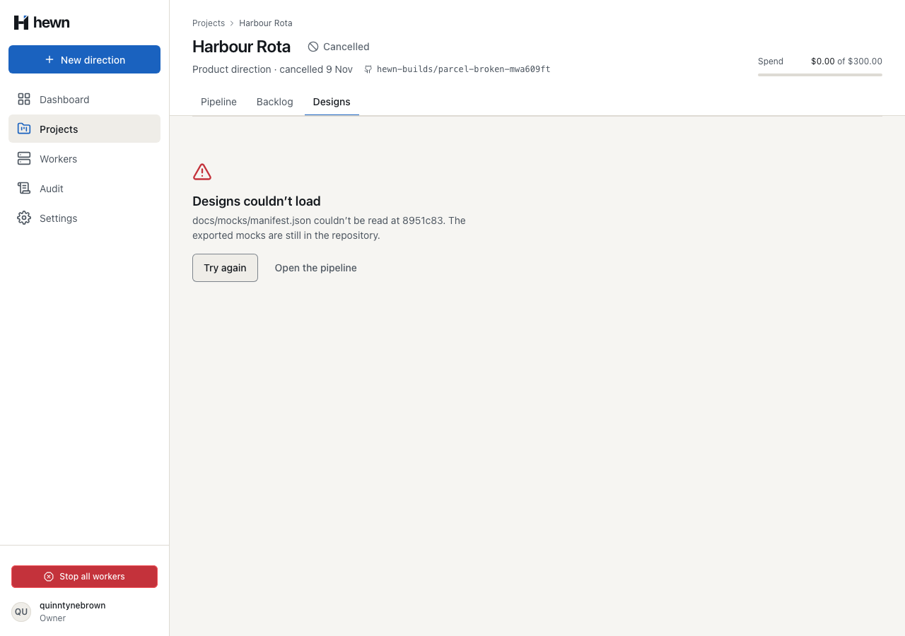

Every screen and state, from a separate origin, in a sandbox, at any size and theme.



var token = tokens.Sign(project.Id, manifest.Sha);
var listed = screens
.Where(s => !string.IsNullOrWhiteSpace(s.Screen))
.Select(s => new DesignScreenDto(
s.Screen!,
string.IsNullOrWhiteSpace(s.Feature) ? Label(s.Screen!) : s.Feature!,
string.IsNullOrWhiteSpace(s.MagicPatternsUrl) ? null : s.MagicPatternsUrl,
(s.States ?? []).Select(state =>
{
var path = $"docs/mocks/{s.Screen}/{state}.html";
return new DesignStateDto(state, Label(state), path, tokens.Url(token, path));
}).ToList()))
.ToList();
return new DesignsDto(manifest.Sha, listed.Sum(s => s.States.Count), listed);
if (manifest is null)
{
return new DesignsDto(null, 0, []);
}
IReadOnlyList<ManifestScreen> screens;
try
{
screens = JsonSerializer.Deserialize<ManifestFile>(manifest.Content, Json)?.Screens ?? [];
}
catch (JsonException)
{
throw new GitHubException($"{Manifest} couldn’t be read at {manifest.Sha[..7]}");
}
private readonly byte[] _key = RandomNumberGenerator.GetBytes(32);
public string Sign(Guid projectId, string sha)
{
var expires = clock.GetUtcNow().AddMinutes(options.Value.TokenMinutes).ToUnixTimeSeconds();
var payload = Encoding.ASCII.GetBytes($"{projectId:N}.{sha}.{expires}");
return $"{Base64Url.EncodeToString(payload)}.{Base64Url.EncodeToString(HMACSHA256.HashData(_key, payload))}";
}
var payload = Base64Url.DecodeFromChars(parts[0]);
if (!CryptographicOperations.FixedTimeEquals(HMACSHA256.HashData(_key, payload), Base64Url.DecodeFromChars(parts[1])))
{
return null;
}
var fields = Encoding.ASCII.GetString(payload).Split('.');
return fields.Length == 3
&& Guid.TryParseExact(fields[0], "N", out var projectId)
&& long.TryParse(fields[2], out var expires)
&& clock.GetUtcNow().ToUnixTimeSeconds() < expires
? new PreviewGrant(projectId, fields[1])
: null;
var origin = new Uri(app.Services.GetRequiredService<IOptions<PreviewOptions>>().Value.Origin);
app.MapGet("/preview/{token}/{**path}", async (string token, string path, string? theme, IMediator mediator, HttpResponse response, CancellationToken cancellationToken) =>
{
var file = await mediator.Send(new ServePreviewQuery(token, path, theme), cancellationToken);
response.Headers.ContentSecurityPolicy = "sandbox allow-scripts";
response.Headers.XContentTypeOptions = "nosniff";
response.Headers["Referrer-Policy"] = "no-referrer";
response.Headers.CacheControl = "private, max-age=300";
return Results.Bytes(file.Content, file.ContentType);
})
.RequireHost(origin.Authority)
.AllowAnonymous();
var grant = tokens.Read(query.Token) ?? throw new NotFoundException();
var path = query.Path;
if (!PreviewOptions.AllowedRoots.Any(r => path.StartsWith(r, StringComparison.Ordinal))
|| path.Split('/').Any(segment => segment is "" or "." or ".." || segment.Contains('\\')))
{
throw new NotFoundException();
}
var content = await cache.GetOrAddAsync((grant.ProjectId, grant.Sha, path), async () =>
{
var project = await db.Projects.AsNoTracking().SingleOrDefaultAsync(p => p.Id == grant.ProjectId, cancellationToken);
return project is { RepositoryOwner: { } owner, RepositoryName: { } name }
? (await gitHub.ReadFileAsync(owner, name, path, grant.Sha, cancellationToken))?.Content
: null;
}) ?? throw new NotFoundException();
<div
#frame
class="preview__frame"
[class.preview__frame--dark]="theme() === 'dark'"
[class.preview__frame--narrow]="width() === 375"
[style.--w]="width() / 16 + 'rem'"
>
<iframe
sandbox="allow-scripts"
referrerpolicy="no-referrer"
data-testid="preview-frame"
[title]="label()"
[src]="src()"
[style.width.px]="width()"
[style.height.px]="frameHeight() / scale()"
[style.transform]="'scale(' + scale() + ')'"
const attempt = (read) => { try { return String(read()); } catch (error) { return 'blocked: ' + error.name; } };
const show = (key, value) => { document.querySelector('[data-probe="' + key + '"]').textContent = value; };
show('origin', self.origin);
show('cookie', attempt(() => document.cookie));
show('storage', attempt(() => localStorage.getItem('hewn-probe')));
show('parent', attempt(() => parent.document.title));
// Angular blocks resource URLs it can't vouch for; this one comes from the API and only ever points at the preview
// origin, whose response carries its own CSP sandbox as well.
protected readonly src = computed(() =>
this.sanitizer.bypassSecurityTrustResourceUrl(previewSrc(this.url(), this.theme())),
);
protected readonly scale = computed(() =>
this.box().width ? Math.min(1, this.box().width / this.width()) : 1,
);
protected readonly frameHeight = computed(() => this.box().height || (this.width() * 3) / 4);

var (owner, projectId) = await ProjectAsync(Designed());
var url = PreviewUrl(await DesignsAsync(owner, projectId), "reconcile-statement", "review");
var path = new Uri(url).AbsolutePath;
var token = path.Split('/')[2];
using var browser = PreviewBrowser();
var tampered = await browser.GetAsync(url.Replace(token, token[..^2] + (token[^2] == 'A' ? "BB" : "AA"), StringComparison.Ordinal));
Assert.Equal(HttpStatusCode.NotFound, tampered.StatusCode);
// Mission Control's own origin never serves project HTML, even with a valid token.
var onMissionControl = await owner.GetAsync(path);
Assert.Equal(HttpStatusCode.NotFound, onMissionControl.StatusCode);
_factory.Clock.Advance(TimeSpan.FromMinutes(61));
var expired = await browser.GetAsync(url);
Assert.Equal(HttpStatusCode.NotFound, expired.StatusCode);
expect(src.pathname).toMatch(/^\/preview\/[^/]+\/docs\/mocks\/reconcile-statement\/review\.html$/);
await expect(designs.servedFrom).toContainText('Served from 127.0.0.1:5300 in a sandboxed frame');
const probe = await designs.probe();
expect(probe.origin).toBe('null');
expect(probe.cookie).toBe('blocked: SecurityError');
expect(probe.storage).toBe('blocked: SecurityError');
expect(probe.parent).toBe('blocked: SecurityError');
for (const [size, px] of [
['XS', 375],
['S', 576],
['M', 768],
['L', 992],
['XL', 1200],
] as const) {
await designs.width(size).click();
await expect(designs.width(size)).toHaveAttribute('aria-checked', 'true');
await expect(designs.probeReading('width')).toHaveText(String(px));
await expect(designs.servedFrom).toContainText(`${px} px`);
}
await designs.theme('Dark').click();
8 new, through the real API and preview host
widths, caption, selection, theme, host
5 behaviour, 5 visual, 4 a11y




